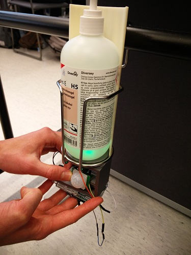
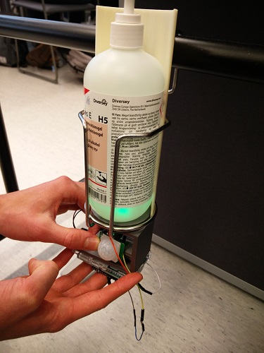

About me
I'm web-application developer from Oulu. I like challenges and trying out new things just for fun.
I started in DevLAB 27th of august. I wanted to study in DevLAB because its focused on solving problems that are
daily life for some people. I was working as a contact person and a programmer and both of those are something that I can do
very well. I was arranging meetings and was one of the product developers who made it possible to test our prototype
in a real environment.
I'm not afraid of going outside my comfort zone because thats where I learn the most and I like challenges. I learn fast and I know my strengths and weaknesess.
 
